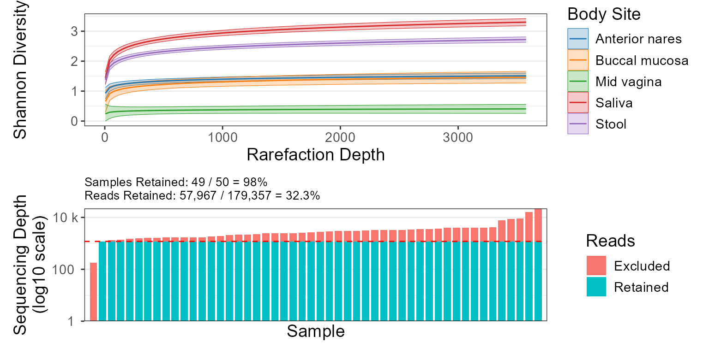

Combines rare_corrplot and depths_barplot into a single figure.
Source:R/rare_multiplot.r
rare_multiplot.RdCombines rare_corrplot and depths_barplot into a single figure.
Usage
rare_multiplot(
biom,
rline = TRUE,
metric = "OTUs",
depths = NULL,
points = FALSE,
color.by = NULL,
facet.by = NULL,
limit.by = NULL,
ci = 95,
caption = FALSE,
labels = FALSE,
trans = "log10",
...
)Arguments
- biom
A BIOM object, as returned from read_biom.
- rline
Where to draw a vertical line on the plot, intended to show a particular rarefaction depth. Default:
TRUE(no line).- metric
Alpha diversity metric(s) to use. Options are:
"OTUs","Shannon","Chao1","Simpson", and/or"InvSimpson". Default:"OTUs".- depths
Rarefaction depths to show in the plot. Passed to adiv_table. The default,
NULL, uses a heuristic to pick optimal depths.- points
Overlay a scatter plot. Default:
FALSE.- color.by, facet.by, limit.by
Metadata columns to use for data partitioning. Default:
NULL- ci
The confidence interval to display around the fitted curve. Set to
FALSEto hide the confidence interval. Default:95.- caption
Display information about the method used for trendline fitting beneath the plot. Default:
FALSE.- labels
Show sample names under each bar. Default:
FALSE.- trans
Y-axis transformation. Options are
"log10"orNULL. Default:"log10".- ...
Additional parameters to pass along to ggplot2 functions. Prefix a parameter name with either
p.,r./v., ors.to ensure it gets passed to (and only to) geom_point, vline, or geom_smooth, respectively. For instance,p.size = 2ensures only the points have their size set to2.
Value
A ggplot2 plot. The computed data points and statistics will
be attached as attr(p, 'data') and attr(p, 'stats'),
respectively.
See also
Other plotting:
adiv_boxplot(),
adiv_corrplot(),
bdiv_biplot(),
bdiv_boxplot(),
bdiv_heatmap(),
depths_barplot(),
plot_heatmap(),
rare_corrplot(),
taxa_boxplot(),
taxa_corrplot(),
taxa_heatmap(),
taxa_stacked(),
tree_plot()
Examples
library(rbiom)
rare_multiplot(hmp50, color.by="Body Site")
#> Argument 'ci' was ignored. Valid choices are:
#> adjust, alpha, avgd.over, bias.adjust, by.vars, calc, delta, df, initMesg, estName, estType, famSize, frequentist, infer, inv.lbl, level, methDesc, nesting, null, predict.type, pri.vars, side, sigma, tran, tran.mult, tran.offset, tran2, type, is.new.rg, submodel, model.info, roles, grid, levels, matlevs, linfct, bhat, nbasis, V, dffun, dfargs, misc, post.beta
#> `geom_smooth()` using formula = 'y ~ x'
